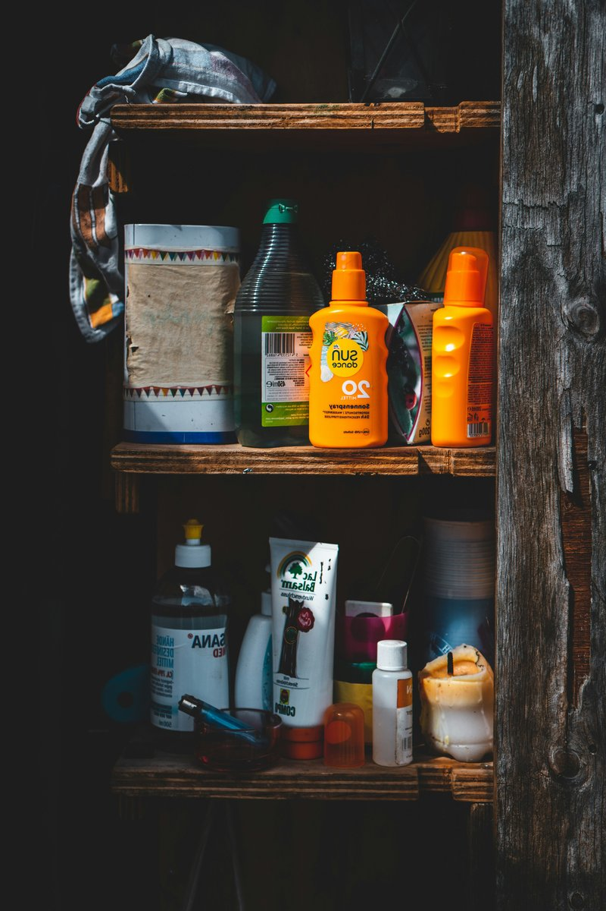
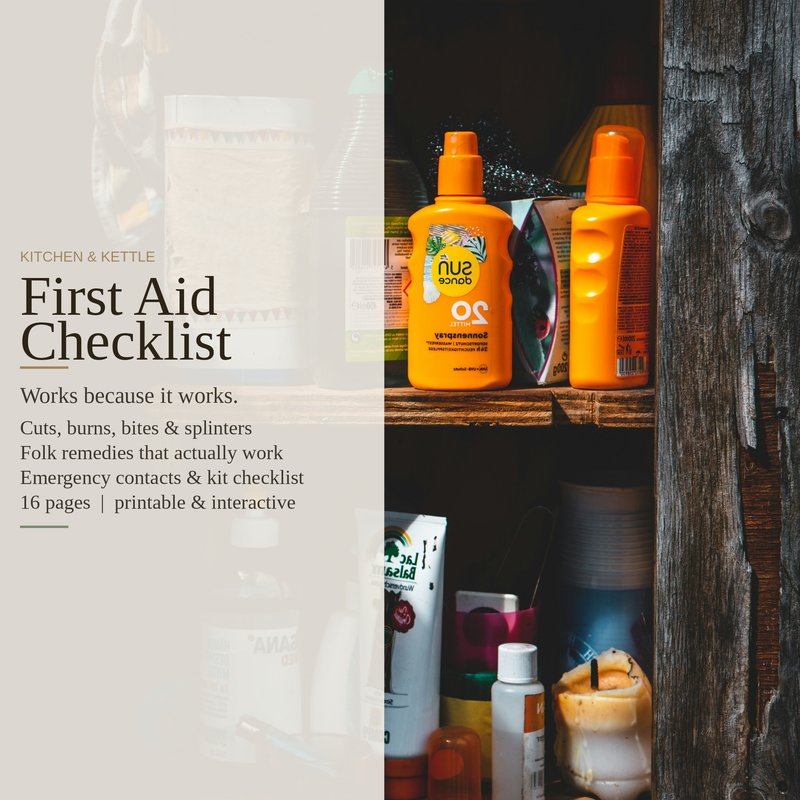

Some of the best first aid advice doesn't come from a first aid manual. It comes from people who handled injuries with whatever was in the house — and passed down the ones that worked. A few of those remedies hold up. Not because they're old, but because the chemistry and mechanics behind them are sound.
Here are three I use. All of them cost less than a trip to the drugstore, and none of them require anything you don't already have.

Duct tape for splinters
This one sounds ridiculous until you try it. Cut a piece of duct tape slightly larger than the splinter. Press it firmly over the splinter — really press it down, make good contact with the skin. Wait a few minutes. Then peel the tape off in the opposite direction the splinter went in.
The tape lifts the splinter out because the adhesive bonds to the exposed end of the splinter better than your skin holds onto it. It works best on wood splinters and fiberglass slivers — the kind where digging with tweezers just breaks the splinter into smaller pieces. For deep splinters or ones fully embedded under the skin, tweezers are still your best bet. But for the surface-level ones that are too small to grab, duct tape beats digging a hole in your finger with a needle.
Baking soda paste for bee stings
Bee venom is acidic. Baking soda is alkaline. Mix a teaspoon of baking soda with just enough water to make a thick paste — about the consistency of toothpaste — and dab it onto the sting. It neutralizes the venom on contact, which reduces the stinging and swelling faster than leaving it alone.
This only works for bee stings, not wasp stings. Wasp venom is alkaline, so baking soda won't help — for wasps you want vinegar, which is acidic. Most people don't stop to identify which insect stung them, but if you saw the bee, this is worth doing. Leave the paste on for fifteen minutes, rinse with cool water, and apply a cold pack.
And no — baking soda and vinegar together doesn't work for anything. They neutralize each other into salt water and carbon dioxide. The fizzing is satisfying but it's not cleaning or healing anything. Use one or the other, not both at the same time.
Rubbing alcohol for swimmer's ear
Swimmer's ear happens when water gets trapped in the ear canal and bacteria start growing in the warm, wet environment. A few drops of rubbing alcohol in the affected ear — tilt your head, let it sit for thirty seconds, then drain — dries out the canal quickly. The alcohol evaporates fast and takes the trapped water with it.
This is a preventive, not a treatment once the ear is already infected. If there's pain, discharge, or the ear canal is swollen shut, skip the alcohol — you need a doctor, not a home remedy. Alcohol on inflamed tissue hurts and can make things worse. But if you feel that waterlogged sensation after swimming or showering, a few drops before bed usually fixes it by morning.
The full First Aid Checklist covers 11 injury scenarios with clear step-by-step care — cuts, burns, splinters, sprains, bites, choking, nosebleeds, eye injuries, and more. Each one includes when to handle it at home and when to call 911. Plus a 22-item kit checklist with clickable checkboxes, a fillable emergency contacts page, and six more folk remedies with the same kind of honest notes.
First Aid Checklist on Etsy →